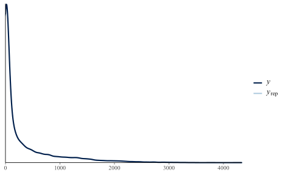
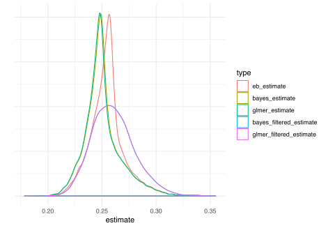

Table of Contents
Introduction
A couple of folks I work with independently came across an article by Data Camp’s David Robinson demonstrating empirical bayes. It provides a nice simple example of how to create a prior from the observed data, allowing it to induce shrinkage in estimates, in this case career batting averages. This would better allow one to compare someone that had only a relatively few at-bats to those that had longer careers.
It is a very simple and straightforward demo, and admits that it doesn’t account for many other things that could be brought into the model, but that’s also why it’s effective at demonstrating the technique. However, shrinkage of parameter estimates can be accomplished in other ways, so I thought I’d compare it to two of my preferred ways to do so - a fully Bayesian approach and a random effects/mixed-model approach.
I demonstrate shrinkage in mixed models in more detail here and here, and I’m not going to explain Bayesian analysis in general, but see my doc on it. This post is just for a quick comparison of techniques.
Data Setup
We’ll start as we always do, with the data. The following just duplicates David’s article code. Nothing new here.
library(dplyr)
library(tidyr)
library(Lahman)
career <- Batting %>%
filter(AB > 0) %>%
anti_join(Pitching, by = "playerID") %>%
group_by(playerID) %>%
summarize(H = sum(H), AB = sum(AB)) %>%
mutate(average = H / AB)
# use names along with the player IDs
career <- Master %>%
tbl_df() %>%
select(playerID, nameFirst, nameLast) %>%
unite(name, nameFirst, nameLast, sep = " ") %>%
inner_join(career, by = "playerID")
career_filtered <- career %>%
filter(AB >= 500)
m <- MASS::fitdistr(career_filtered$average,
dbeta,
start = list(shape1 = 1, shape2 = 10))
alpha0 <- m$estimate[1]
beta0 <- m$estimate[2]
career_eb <- career %>%
mutate(eb_estimate = (H + alpha0) / (AB + alpha0 + beta0))
career_eb
# A tibble: 9,509 x 6
playerID name H AB average eb_estimate
<chr> <chr> <int> <int> <dbl> <dbl>
1 aaronha01 Hank Aaron 3771 12364 0.305 0.304
2 aaronto01 Tommie Aaron 216 944 0.229 0.236
3 abadan01 Andy Abad 2 21 0.0952 0.248
4 abadijo01 John Abadie 11 49 0.224 0.254
5 abbated01 Ed Abbaticchio 772 3044 0.254 0.254
6 abbotfr01 Fred Abbott 107 513 0.209 0.227
7 abbotje01 Jeff Abbott 157 596 0.263 0.262
8 abbotku01 Kurt Abbott 523 2044 0.256 0.256
9 abbotod01 Ody Abbott 13 70 0.186 0.245
10 abercda01 Frank Abercrombie 0 4 0 0.256
# ... with 9,499 more rowsModels
As mentioned, I will compare the empirical bayes results to those of a couple of approaches. They are:
- Bayesian mixed model on full data (using brms)
- standard mixed model on full data (using lme4)
- Bayesian mixed model on filtered data (at bats greater than 500)
- standard mixed model on filtered data
The advantages to these are that using a fully Bayesian approach allows us to not approximate the Bayesian and just do it. The standard mixed model essentially does the same thing with a penalized regression approach which also approximates the Bayesian, but doesn’t require any double dipping of the data to get at a prior. In both cases, we can accomplish the desired model with just a standard R modeling approach.
The model is a standard binomial model for counts. In base R glm, we would do something like the following.
glm(cbind(H, AB-H) ~ ..., data = career_eb, family = binomial)The model is actually for the count of successes out of the total, which R has always oddly done in glm as cbind(success, not success) rather than the more intuitive route (my opinion). The brms package will make it more obvious, but glmer uses this same glm approach. The key difference for both is that we add a per-observation random effect for playerID1.
Full Bayes
We’ll start with the full Bayesian approach using brms. This model will struggle a bit2, and takes a while to run, as it’s estimating 9510 parameters. But in the end we get what we want.
# in case anyone wants to use rstanarm I show it here
# library(rstanarm)
# bayes_full = stan_glmer(cbind(H, AB-H) ~ 1 + (1|playerID),
# data = career_eb,
# family = binomial)
library(brms)
bayes_full = brm(H|trials(AB) ~ 1 + (1|playerID),
data = career_eb,
family = binomial,
seed = 1234,
iter = 1000,
cores = 4)We can see right off the bat that approach estimates the data fairly well. Again, the binomial model is for counts, but if we wanted proportions, we could just divide this result by the AB (at bats) column.
pp_check(bayes_full)
Full Mixed
The lme4 model takes the glm approach. Very straightforward, and fast, as it doesn’t actually estimate the random effects, but instead predicts them. The predictions are in fact akin to empirical bayes estimates.
glmer_full = lme4::glmer(cbind(H, AB-H) ~ 1 + (1|playerID),
data = career_eb,
family = binomial)Filtered models
bayes_filtered = brm(H|trials(AB) ~ 1 + (1|playerID),
data = career_eb %>% filter(AB >= 500),
family = binomial,
iter = 1000,
seed = 1234,
cores = 4)
glmer_filtered = lme4::glmer(cbind(H, AB-H) ~ 1 + (1|playerID),
data = career_eb %>% filter(AB >= 500),
family = binomial)Prediction comparison
career_other = career_eb %>%
mutate(
bayes_estimate = fitted(bayes_full)[,1] / AB,
glmer_estimate = fitted(glmer_full),
)
career_other_filtered = career_filtered %>%
mutate(
bayes_filtered_estimate = fitted(bayes_filtered)[,1] / AB,
glmer_filtered_estimate = fitted(glmer_filtered),
) %>%
select(playerID, contains('filter'))
career_all = left_join(career_other,
career_other_filtered)
career_all
# A tibble: 9,509 x 10
playerID name H AB average eb_estimate bayes_estimate glmer_estimate bayes_filtered_e~ glmer_filtered_e~
<chr> <chr> <int> <int> <dbl> <dbl> <dbl> <dbl> <dbl> <dbl>
1 aaronha01 Hank Aar~ 3771 12364 0.305 0.304 0.304 0.304 0.304 0.304
2 aaronto01 Tommie A~ 216 944 0.229 0.236 0.234 0.234 0.238 0.238
3 abadan01 Andy Abad 2 21 0.0952 0.248 0.242 0.240 NA NA
4 abadijo01 John Aba~ 11 49 0.224 0.254 0.247 0.247 NA NA
5 abbated01 Ed Abbat~ 772 3044 0.254 0.254 0.253 0.253 0.254 0.254
6 abbotfr01 Fred Abb~ 107 513 0.209 0.227 0.225 0.224 0.232 0.231
7 abbotje01 Jeff Abb~ 157 596 0.263 0.262 0.260 0.259 0.262 0.262
8 abbotku01 Kurt Abb~ 523 2044 0.256 0.256 0.256 0.255 0.257 0.257
9 abbotod01 Ody Abbo~ 13 70 0.186 0.245 0.239 0.238 NA NA
10 abercda01 Frank Ab~ 0 4 0 0.256 0.248 0.247 NA NA
# ... with 9,499 more rowsTop and bottom predictions
top_10_eb = career_all %>%
top_n(10, eb_estimate) %>%
select(playerID, eb_estimate)
top_10_bayes = career_all %>%
top_n(10, bayes_estimate) %>%
select(playerID, bayes_estimate)
top_10_mixed = career_all %>%
top_n(10, glmer_estimate) %>%
select(playerID, glmer_estimate)
bind_cols(top_10_eb, top_10_bayes, top_10_mixed)
# A tibble: 10 x 6
playerID eb_estimate playerID1 bayes_estimate playerID2 glmer_estimate
<chr> <dbl> <chr> <dbl> <chr> <dbl>
1 delahed01 0.342 delahed01 0.342 delahed01 0.343
2 gehrilo01 0.337 gehrilo01 0.337 gehrilo01 0.337
3 gwynnto01 0.336 gwynnto01 0.336 gwynnto01 0.336
4 hamilbi01 0.340 hamilbi01 0.340 hamilbi01 0.340
5 heilmha01 0.338 heilmha01 0.339 heilmha01 0.338
6 hornsro01 0.355 hornsro01 0.355 hornsro01 0.355
7 jacksjo01 0.350 jacksjo01 0.350 jacksjo01 0.350
8 keelewi01 0.338 keelewi01 0.338 keelewi01 0.338
9 lajoina01 0.336 lajoina01 0.336 lajoina01 0.336
10 terrybi01 0.337 terrybi01 0.337 terrybi01 0.337
bottom_10_eb = career_all %>%
top_n(-10, eb_estimate) %>%
select(playerID, eb_estimate)
bottom_10_bayes = career_all %>%
top_n(-10, bayes_estimate) %>%
select(playerID, bayes_estimate)
bottom_10_mixed = career_all %>%
top_n(-10, bayes_estimate) %>%
select(playerID, glmer_estimate)
bind_cols(bottom_10_eb, bottom_10_bayes, bottom_10_mixed)
# A tibble: 10 x 6
playerID eb_estimate playerID1 bayes_estimate playerID2 glmer_estimate
<chr> <dbl> <chr> <dbl> <chr> <dbl>
1 armbrch01 0.200 armbrch01 0.199 armbrch01 0.198
2 bakerge01 0.196 bakerge01 0.195 bakerge01 0.195
3 bergebi01 0.179 bergebi01 0.179 bergebi01 0.179
4 eastehe01 0.197 eastehe01 0.196 eastehe01 0.196
5 gladmbu01 0.197 gladmbu01 0.196 gladmbu01 0.195
6 humphjo01 0.196 humphjo01 0.194 humphjo01 0.194
7 oylerra01 0.191 oylerra01 0.191 oylerra01 0.191
8 ryanmi02 0.202 ryanmi02 0.201 ryanmi02 0.201
9 traffbi01 0.201 traffbi01 0.200 traffbi01 0.200
10 vukovjo01 0.196 vukovjo01 0.195 vukovjo01 0.194Extreme predictions
career_all %>%
filter(average == 1) %>%
arrange(desc(AB))
# A tibble: 24 x 10
playerID name H AB average eb_estimate bayes_estimate glmer_estimate bayes_filtered_es~ glmer_filtered_e~
<chr> <chr> <int> <int> <dbl> <dbl> <dbl> <dbl> <dbl> <dbl>
1 paciojo01 John Pa~ 3 3 1 0.266 0.259 0.258 NA NA
2 birasst01 Steve B~ 2 2 1 0.264 0.257 0.255 NA NA
3 hopkimi01 Mike Ho~ 2 2 1 0.264 0.256 0.255 NA NA
4 banisje01 Jeff Ba~ 1 1 1 0.261 0.253 0.253 NA NA
5 bassdo01 Doc Bass 1 1 1 0.261 0.254 0.253 NA NA
6 burnscb01 C. B. B~ 1 1 1 0.261 0.253 0.253 NA NA
7 gallaja01 Jackie ~ 1 1 1 0.261 0.254 0.253 NA NA
8 gleasro01 Roy Gle~ 1 1 1 0.261 0.255 0.253 NA NA
9 kuczest01 Steve K~ 1 1 1 0.261 0.254 0.253 NA NA
10 liddeda01 Dave Li~ 1 1 1 0.261 0.254 0.253 NA NA
# ... with 14 more rows
career_all %>%
filter(average == 0) %>%
arrange(desc(AB))
# A tibble: 626 x 10
playerID name H AB average eb_estimate bayes_estimate glmer_estimate bayes_filtered_es~ glmer_filtered_e~
<chr> <chr> <int> <int> <dbl> <dbl> <dbl> <dbl> <dbl> <dbl>
1 littlla01 Larry L~ 0 23 0 0.241 0.234 0.233 NA NA
2 pottemi01 Mike Po~ 0 23 0 0.241 0.235 0.233 NA NA
3 kennejo01 John Ke~ 0 19 0 0.244 0.236 0.236 NA NA
4 redmoha01 Harry R~ 0 19 0 0.244 0.237 0.236 NA NA
5 wrighcy01 Cy Wrig~ 0 18 0 0.244 0.238 0.237 NA NA
6 condera01 Ramon C~ 0 16 0 0.246 0.239 0.238 NA NA
7 creelgu01 Gus Cre~ 0 15 0 0.247 0.240 0.239 NA NA
8 gulanmi01 Mike Gu~ 0 15 0 0.247 0.239 0.239 NA NA
9 lerchdu01 Dutch L~ 0 15 0 0.247 0.239 0.239 NA NA
10 luebbro01 Roy Lue~ 0 15 0 0.247 0.240 0.239 NA NA
# ... with 616 more rowsVisualize effects
The following reproduces David’s plots. I start with his original image, altered only to be consistent with my visualization choices, and his explanation:
{kind=link}
The horizontal dashed red line marks \(y=\alpha_0/alpha_0+beta_0=0.259\) - that’s what we would guess someone’s batting average was if we had no evidence at all. Notice that points above that line tend to move down towards it, while points below it move up. The diagonal red line marks \(x=y\). Points that lie close to it are the ones that didn’t get shrunk at all by empirical Bayes. Notice that they’re the ones with the highest number of at-bats (the brightest blue): they have enough evidence that we’re willing to believe the naive batting average estimate.

Here is the same plot against the full bayes estimates. The original lines are kept, but I add lines representing the average of the whole data, and the intercept from the Bayesian analysis (which is essentially the same as with the mixed model).

career_all %>%
select(contains('estimate')) %>%
gather(key = type, value = estimate) %>%
mutate(type = fct_inorder(type)) %>% # to defy ggplot
drop_na() %>% # to get rid of warning
ggplot() +
geom_density(aes(x = estimate, color = type)) +
labs(y = '') +
theme_minimal() +
theme(axis.ticks.y = element_blank(),
axis.text.y = element_blank())
library(ggplot2)
averages = data.frame(
average = c('filtered/eb', 'full data', 'bayes'),
avg = c(mean(career_filtered$average),
mean(career_eb$average),
plogis(fixef(bayes_full)[1]))
)
library(ggnewscale)
career_all %>%
ggplot(aes(x = average, y = bayes_estimate)) +
geom_hline(aes(yintercept = avg, color = average),
data = averages) +
scico::scale_color_scico_d(direction = -1, begin=.25, end=.75) +
new_scale_color() +
geom_abline(color = '#00aaff', alpha = .25) +
geom_point(aes(fill=AB, size=AB), color = 'gray50', pch=21, alpha=.1) +
labs(y = 'Full Bayes', x='Batting Average') +
scico::scale_color_scico(direction = -1) +
scale_x_continuous(breaks = seq(0, 1, by=.1)) +
scale_y_continuous(breaks = seq(.20, .35, by=.025)) +
visibly::theme_trueMinimal() +
rob_plot_theme
# career_all %>%
# select(playerID, contains('estimate')) %>%
# gather(key = type, value = estimate, -playerID, -eb_estimate) %>%
# mutate(type = fct_inorder(type)) %>% # to defy ggplot
# drop_na() %>% # to get rid of warning
# ggplot(aes(x = eb_estimate, y = estimate)) +
# # geom_smooth(color = '#ff5500', se = F, size = .5, method = 'loess') +
# geom_point(color = '#00aaff', alpha=.005, size = .5) +
# facet_wrap(~type, ncol = 2) +
# theme_minimal()
career_all %>%
select(contains('estimate')) %>%
cor(use='pair') %>%
round(2)
make_stancode(H|trials(AB) ~ 1 + (1|playerID),
data = career,
family = binomial)
career_eb %>% pivot_longerThis is possible for mixed models for counts like binomial and poisson (and other distributions) where we don’t estimate the residual variance. This allows us to deal with overdispersion in this model via the random effect variance. See the GLMM FAQ.↩
One chain always struggled a bit with the brms defaults, but diagnostics were okay.↩